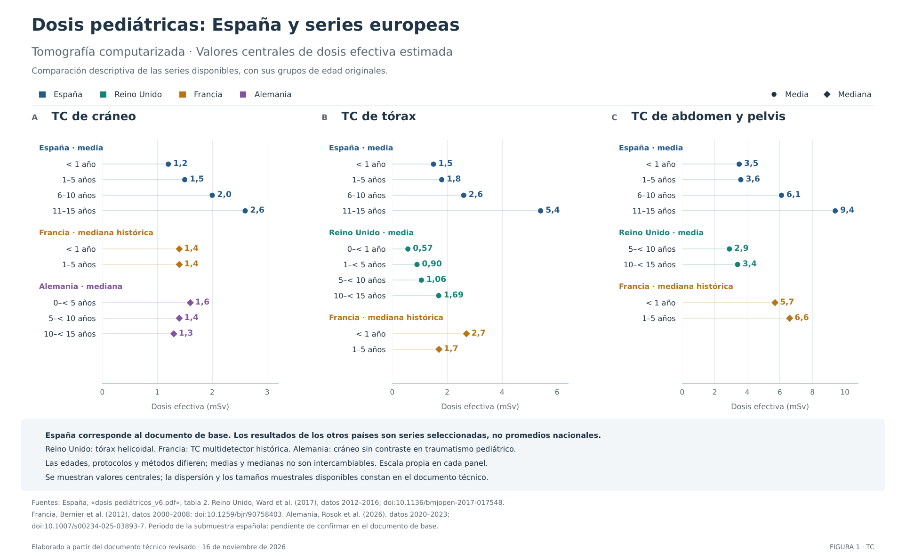
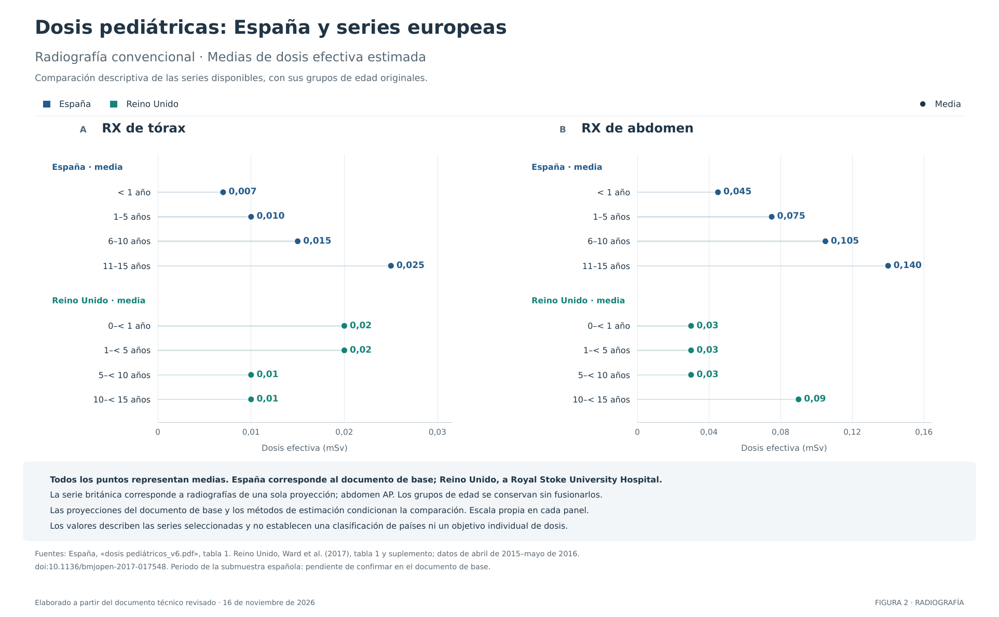

Comparativa con series europeas
Comparación descriptiva: cada serie conserva sus grupos de edad, su protocolo y su estadístico (media o mediana). No es una clasificación de países ni un objetivo de dosis. En el móvil, toque la imagen para ampliarla.

